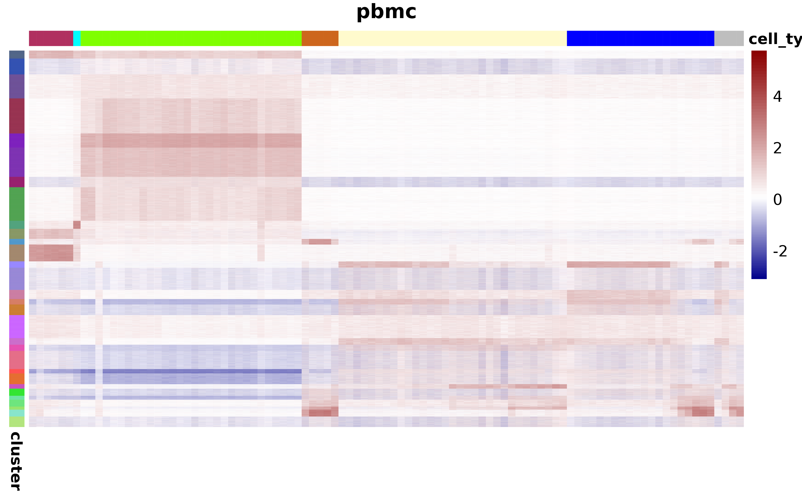
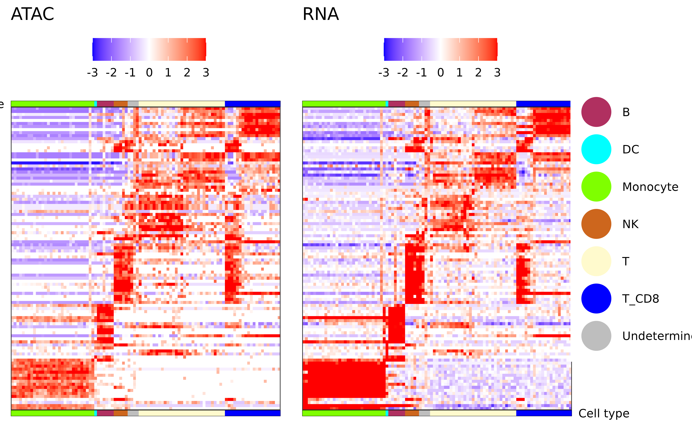

library(mcATAC)
#> Loading required package: misha
#> ℹ Parallelization enabled. Using 77 threads.
library(ggplot2)
ggplot2::theme_set(ggplot2::theme_classic())Download dataset
Download the following dataset from 10x:
And extract it’s contents to a directory called pbmc_data:
if (!dir.exists("pbmc_data")){
download_pbmc_example_data()
}
#> ℹ downloaded processed matrix
#> ✔ successfully downloaded data to pbmc_dataImport ATAC dataset
atac_sc <- import_from_10x("pbmc_data", genome = "hg38", id = "pbmc", description = "PBMC from a healthy donor - granulocytes removed through cell sorting (10k)")
#> • Importing matrix
#> ℹ Imported a matrix of 11909 cells and 144978 features
#> • Importing features
#> ℹ Removed 107861 ATAC peaks which were all zero
#> ℹ 107861 ATAC peaks
#> ! removed 32 peaks from the following chromosome(s) which are missing from hg38: KI270727.1, GL000194.1, GL000205.2, GL000195.1, GL000219.1, KI270734.1, KI270721.1, KI270726.1, KI270713.1
#> ✔ successfully imported to an ScPeaks object with 11909 cells and 107829 ATAC peaks
atac_sc
#> <ScPeaks> object with 11909 cells and 107829 ATAC peaks from hg38.
#> id: "pbmc"
#> description: "PBMC from a healthy donor - granulocytes removed through cell
#> sorting (10k)"
#> Loaded from:
#> /net/mraid14/export/tgdata/users/aviezerl/src/mcATAC/vignettes/pbmc_data/matrix.mtx.gz
#> Slots include:
#> • `@mat`: a numeric matrix where rows are peaks and columns are cells. Can be
#> a sparse matrix.
#> • `@peaks`: a misha intervals set with the peak definitions.
#> • `@genome`: genome assembly of the peaksFilter peaks
by coverage and/or length
Plot the length distribution:
plot_peak_length_distribution(atac_sc)
Plot the coverage distribution:
plot_peak_coverage_distribution(atac_sc)Plot the distribution of the maximal number of peaks per cell for each peak:
plot_peak_max_cov_distribution(atac_sc)Filter the peaks by length and coverage:
atac_sc <- filter_features(atac_sc, minimal_max_umi = 3, min_peak_length = 200, max_peak_length = 1000)
#> • 8544 features were shorter than 200bp
#> • 37160 features were longer than 1000bp
#> • 676 features had a maximal UMI count less than 3
#> ✔ Removed 46380 peaks out of 107829 (43%). The object is left with 61449 peaks.Identify outliers using coverage density:
plot_peak_coverage_density(atac_sc) + geom_hline(yintercept = 250, linetype = "dashed", color = "red")
atac_sc <- filter_features(atac_sc, max_peak_density = 250)
#> • 107 features had a peak density of more than 250 UMIs per 100bp
#> ! Adding to previous ignore policy (46380 peaks).
#> ✔ Removed 107 peaks out of 107829 (0%). The object is left with 61342 peaks (43%).by overlap with known blacklist regions
blacklist_overlaps <- find_blacklist_overlaps(atac_sc)
atac_sc <- atac_ignore_peaks(atac_sc, blacklist_overlaps, reset = FALSE)
#> ! Adding to previous ignore policy (46487 peaks).
#> ✔ Removed 322 peaks out of 107829 (0%). The object is left with 61020 peaks (43%).Project RNA metacells
data(cell_to_metacell_pbmc_example)
head(cell_to_metacell_pbmc_example)
#> # A tibble: 6 × 2
#> cell_id metacell
#> <chr> <int>
#> 1 AAACAGCCAATCCCTT-1 44
#> 2 AAACAGCCAATGCGCT-1 22
#> 3 AAACAGCCACCAACCG-1 7
#> 4 AAACAGCCAGGATAAC-1 24
#> 5 AAACAGCCAGTTTACG-1 32
#> 6 AAACATGCAAGGTCCT-1 30
atac_mc <- project_atac_on_mc(atac_sc, cell_to_metacell_pbmc_example)
#> ℹ 3198 cells (out of 11909) do not have a metacell and have been removed.
#> • Setting egc cell size to 67248.6 (the 0.1 quantile of metacell sizes)
#> ✔ Created a new McPeaks object with 97 metacells and 61020 ATAC peaks.
atac_mc
#> <McPeaks> object with 97 metacells and 61020 ATAC peaks from hg38.
#> id: "pbmc"
#> description: "PBMC from a healthy donor - granulocytes removed through cell
#> sorting (10k)"
#> Slots include:
#> • `@mat`: a numeric matrix where rows are peaks and columns are metacells.
#> Can be a sparse matrix.
#> • `@peaks`: a misha intervals set with the peak definitions.
#> • `@genome`: genome assembly of the peaks
#> • `@egc`: a numeric matrix which contains normalized metacell accessibility.
#> • `@fp`: a matrix showing for each peak (row) the relative enrichment of umis
#> in log2 scale.Or using a metacell1 object:
atac_mc <- project_atac_on_mc_from_metacell1(atac_sc, "pbmc_data/scdb", "rna")Import annotations
data(mcmd)
atac_mc <- add_mc_metadata(atac_mc, mcmd)Identify dynamic peaks
dyn_peaks <- identify_dynamic_peaks(atac_mc, mean_thresh_q = 0.05)
#> • Plotting log10(mean) vs log10(sd/mean)
#> ✔ Identified 14577 dynamic peaks (out of 61020) using the 'bmq' method.Cluster a peak set
peak_clust <- gen_atac_peak_clust(atac_mc, k = 30)
#> • Clustering using "kmeans++". k = 30
table(peak_clust)
#> peak_clust
#> 1 2 3 4 5 6 7 8 9 10 11 12 13 14 15 16
#> 1291 2571 3891 5686 2296 4734 1682 5442 1308 1634 909 2729 1020 3608 1485 873
#> 17 18 19 20 21 22 23 24 25 26 27 28 29 30
#> 1722 3739 1061 1001 2954 707 1734 732 1156 629 1119 501 1111 1695Plot peaks clustering
plot_atac_peak_map(atac_mc, atac_mc@metadata$cell_type, peak_clust)
#> ℹ Expected time to plot is roughly 71s
Export dynamic peaks to UCSC tracks
outdir <- tempdir()
export_atac_clust_ucsc(atac_mc, track_prefix = 'hum_pbmc_10x', normalization = 'lfcom', output_dir = outdir)
#> ℹ Using eps_q=0.05 and eps = 0.731958762886598 for regularization
#> ✔ Successfully exported to ucsc. Files generated:
#> • /tmp/Rtmp6ZARlH/hum_pbmc_10x_B.ucsc
#> • /tmp/Rtmp6ZARlH/hum_pbmc_10x_DC.ucsc
#> • /tmp/Rtmp6ZARlH/hum_pbmc_10x_Monocyte.ucsc
#> • /tmp/Rtmp6ZARlH/hum_pbmc_10x_NK.ucsc
#> • /tmp/Rtmp6ZARlH/hum_pbmc_10x_T.ucsc
#> • /tmp/Rtmp6ZARlH/hum_pbmc_10x_T_CD8.ucsc
#> • /tmp/Rtmp6ZARlH/hum_pbmc_10x_Undetermined.ucsc
UCSC track example
Add expression data
data(rna_mc_mat)
atac_mc <- add_mc_rna(atac_mc, rna_mc_mat)Plot accesability vs expression
Between a gene and its promoter:
plot_atac_rna(atac_mc, "CD4")
#> → The gene "CD4" has 9 alternative promoters.Between a gene and a promoter of a different gene:
plot_atac_rna(atac_mc, "CD4", "GZMK")
#> → The gene "GZMK" has 2 alternative promoters.Between a gene and an arbitrary peak:
plot_atac_rna(atac_mc, "CD4", peak = atac_mc@peaks$peak_name[1])Plot RNA markers
plot_atac_rna_markers(atac_mc)
#> → removing 7543 genes with no RNA expression in any metacell.
#> → removing 23451 genes with no RNA expression (log2) of above -13 in any metacell.
#> → removing 3534 genes with no fold change (log2) of above 2 in any metacell.
#> ℹ 5191 genes left for consideration.
#> ✔ 100 marker genes selected.
#> ℹ Ordering metacells based on CA6 vs LYN
#> ℹ Maintaining metacell order within cell types
#> ✔ marker matrix of 100 genes x 97 metacells created.
#> → Creating ATAC matrix by finding for each marker gene the ATAC peak that is most correlated to it.
Export to an h5ad file
export_to_h5ad(atac_mc, "pbmc_data/atac_mc.h5ad", compression = "gzip")
# Load using: atac_mc <- import_from_h5ad("pbmc_data/atac_mc.h5ad")Plot per-metacell tracks around some gene/interval
library(metacell)
scdb_init("scdb")
mc_rna = scdb_mc('rna_w_color_key')
mcmd = readr::read_csv('./data/mcmd.csv')
color_key = unique(mcmd[,c('st', 'color')])
colnames(color_key) = c('cell_type', 'color')
col_annot = data.frame(cell_type = mcmd$st)
rownames(col_annot) = mcmd$mc
ann_colors = list(cell_type = setNames(color_key$color, color_key$cell_type))
plot_tracks_at_locus(tracks = pbmc_tracks, extend = 5e+4,
gene = "ATF3",
mc_rna = mc_rna,
gene_annot = T,
order_rows = T,
annotation_row = col_annot,
annotation_colors = ann_colors)
## Make per-metacell BAMs, WIGs and tracks
bam_path <- "path/to/possorted_bam.bam"
bam_output_folder <- "./my_mc_bams/"
c2mc_folder <- "./c2mc/"
wig_folder <- "./wig_output"
track_name_prefix = "My_scATAC_project"
generate_per_metacell_bams(bam_path = bam_path, mcatac = atac_mc, out_dir = bam_output_folder, c2mc_path = c2mc_folder)
generate_wigs_from_bams(bam_folder_path = bam_output_folder, track_name_prefix = track_name_prefix, output_path = wig_folder, parallel = TRUE)
convert_wigs_to_tracks(wig_folder, track_name_prefix = track_name_prefix, description = NULL, parallel = TRUE, force = FALSE)Make pseudo-bulk ATAC tracks from per-metacell tracks
bam_output_folder <- "./my_mc_bams/"
track_name_prefix = "My_scATAC_project"
cell_type = "Neuron"
mcmd = tgutil::fread("./data/mcmd.csv") ## metacell metadata
merge_metacell_bams(bam_path = bam_output_folder, output_filename="./pseudo_bulk.bam", mcs = which(mcmd$cell_type == cell_type), parallel = T)
bam_to_wig(bam_path = "./pseudo_bulk.bam", output_filename = "./pseudo_bulk.wig", track_name_prefix = track_name_prefix)
make_misha_track_from_wig(fp = "./pseudo_bulk.wig", track_name_prefix = track_name_prefix, description = glue::glue("Pseudo-bulk track of ATAC signal from {cell_type} cells"))Get available motif PSSM datasets and extract motif energies
misha.ext::gset_genome("hg38")
available_datasets <- get_available_pssms(return_datasets_only = TRUE)
available_datasets
sample_peaks <- dplyr::sample_n(atac_mc@peaks, 1e+4)
motif_mat = generate_motif_pssm_matrix(atac = sample_peaks, motif_regex = c("Bcl", "Atf"), datasets_of_interest = "jaspar")
head(motif_mat)Extract motif energies from random genomic background
misha.ext::gset_genome("hg38")
rg = gen_random_genome_peak_motif_matrix(num_peaks = 1e+4,
bp_from_chrom_edge_to_avoid = 1e+6,
motif_regex = c("Bcl", "Atf"),
datasets_of_interest = "jaspar")
head(rg)Compare Kolmogorov-Smirnov statistics on distribution of motif energies between peaks of interest and genomic background
misha.ext::gset_genome("hg38")
## all peaks
ks_all <- calculate_d_stats(motif_mat, rg, parallel = TRUE, alternative = "less")
## by peak cluster
sample_mc <- subset_peaks(atac_mc = atac_mc, sample_peaks)
sample_peak_clustering <- gen_atac_peak_clust(atac_mc = sample_mc, k = 10)
ks_mat <- calculate_d_stats(motif_mat, rg, parallel = TRUE, fg_clustering = sample_peak_clustering, alternative = "less")
head(ks_mat)